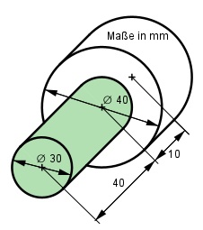
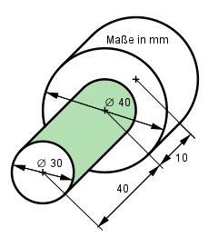

Aufgabe 41 Berechnen Sie das Volumen V und die Oberfläche O des dargestellten Körpers.  V = grüner Zylinder + weißer Zylinder dgrün = 30 mm --> rgrün = dgrün/2 = 30 mm/2 = 15 mm dweiß = 40 mm --> rweiß = dweiß/2 = 40 mm/2 = 20 mm V = п * rgrün² * hgrün + п * rweiß² * hweiß V = п * 15² mm² * 40 mm + п * 20² mm² * 10 mm V = 28 260 mm³ + 12 560 mm³ = 40 820 mm³  O = weiße Zylinderoberfläche + grüne Zylindermantelfläche O = 2*п*rweiß² + 2*п*rweiß*hweiß + 2*п*rgrün*hgrün O = 2*п*20² mm² + 2*п*20 mm*10 mm + 2*п*15 mm*40 mm O = 2 512 mm² + 1 256 mm² + 3 768 mm² = 7 536 mm²